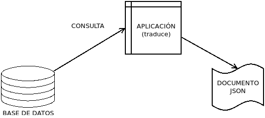

5. Almacenamiento¶
Hasta ahora hemos tratado exclusivamente el intercambio de documentos, esto es, el documento con los datos ya constituía un archivo o un flujo de datos, sin entrar a discutir cómo había sido posible que hubiera llegado a ese estado de archivo o flujo. Incluso, en el caso de un archivo, hemos considerado en muchas ocasiones hasta ahora que se había escrito a mano ex novo, lo cual es posible en algunos casos (p.e. un archivo de configuración escrito en JSON, YAML o XML).
Sin embargo, lo habitual cuando los datos son ingentes es que estos constituyan bases de datos y que a partir de éstas se obtenga la información requerida. Por ejemplo, el Gobierno español proporciona los precios de los carburantes en todas las gasolineras de España y lo hace a través de una API REST, que devuelve datos en formato JSON o XML. Así:
$ URL='https://sedeaplicaciones.minetur.gob.es/ServiciosRESTCarburantes/PreciosCarburantes/Listados/ProductosPetroliferos/'
$ wget -qO - "$URL" | jsonlint -f
nos devolverá un JSON con el listado de todos los productos petrolíferos que podemos adquirir en una estación de servicio. Con este documento podemos saber que el identificador para la gasolina de 95 octanos es el 1. Si hacemos otra consulta para averiguar qué código representa a la provincia de Cádiz:
$ URL='https://sedeaplicaciones.minetur.gob.es/ServiciosRESTCarburantes/PreciosCarburantes/Listados/Provincias/'
$ wget -qO - "$URL" | jsonlint -f
descubriremos que es 11 (su código postal, lo cual era lo previsible). Y con estos datos, podríamos obtener el listado de precios de la gasolina de 95 octanos en la provincia de Cádiz:
$ URL='https://sedeaplicaciones.minetur.gob.es/ServiciosRESTCarburantes/PreciosCarburantes/EstacionesTerrestres/FiltroProvinciaProducto/11/1'
$ wget -qO - "$URL" | jsonlint -f
Como vemos, estamos obteniendo documentos JSON cuya validez (más exactamente bienformidad) podemos comprobar o sobre el cual podemos realizar consultas a través de JSONPath. Sin embargo, es obvio que estos datos se están obteniendo en el servidor originariamente de una base de datos en la que se encuentra almacenada la información, los resultados de cuyas consultas es lo que nos proporcionan las solicitudes. Es probable que internamente en el servidor esté ocurriendo esto:
En principio, para el almacenamiento de la información tenemos tres estrategias distintas:
Crear y almacenar la información como archivos independientes que contienen directamente los documentos, que es precisamente lo que hemos estado haciendo al realizar las tareas propuestas. Esta estrategia, sin embargo, es probable que no acabe bien a poco que crezca el volumen de datos o se produzca concurrencia en las consultas.
Almacenar en un base de datos relacional, pero obteniendo la información en un formato para serialización de datos como JSON o XML[1]. En este caso hay dos vías:
La solicitud de información provoca que una aplicación convierta el típico resultado de la consulta relacional en un documento JSON (o XML), esto es, lo que hemos supuesto que ocurre en el servidor del Gobierno. Llevarlo a cabo requiere el conocimiento de un lenguaje de programación (Java, Python, etc) con librerías para el acceso a la base de datos relacional y para la conversión de la salida en documentos JSON, XML u otros. No trataremos este aspecto por exceder en mucho la profundidad de nuestro módulo.
El propio SGBD relacional ofrece soporte para estos formatos de serialización, bien porque es capaz de almacenar datos directamente en el formato, bien porque es capaz de generar una salida en el formato de serialización que requerimos.
Almacenar en una base de datos no relacional, que nativamente almacena datos en formato XML o JSON.
Dedicaremos algo de tiempo, escaso en cualquier caso y sin profundizar, a estos dos últimos mecanismos.
Contenidos
Notas al pie